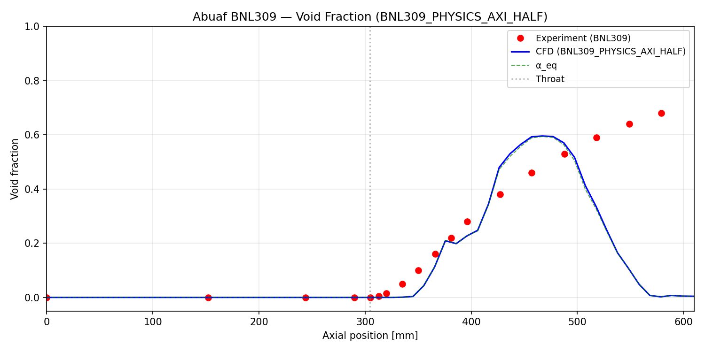
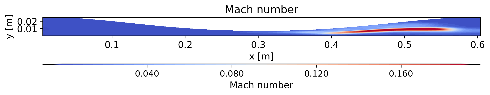
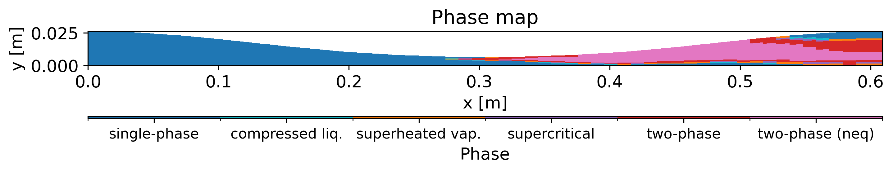
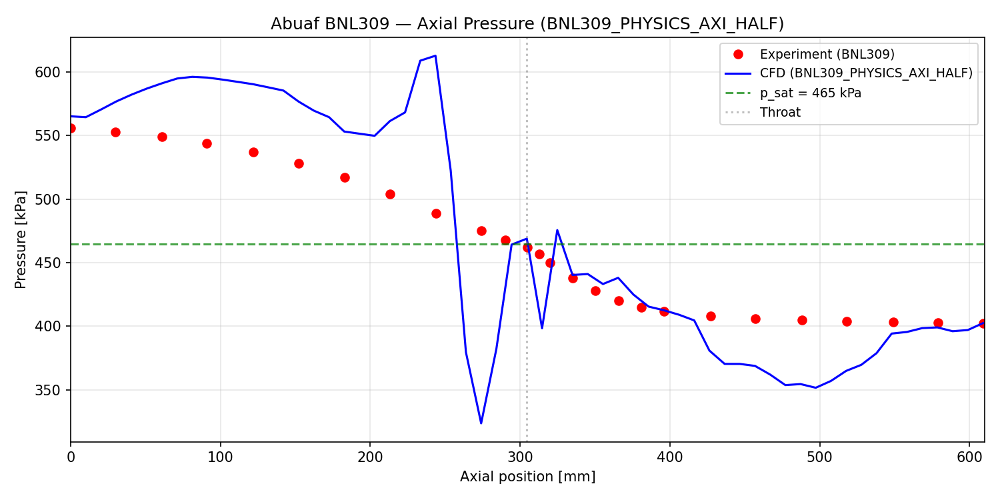

01
+
2-D Compressible Flashing & Cavitating Flow Solver (IAPWS-95)
Project Overview
An edge-based finite-volume solver for 2-D viscous compressible flow of water and steam, built from scratch in C++ to study flash boiling and cavitation in nozzles. It couples a full real-fluid equation of state with finite-rate phase-change physics and is validated against the Abuaf BNL-309 flashing-nozzle experiment.
Numerical Methods
- Edge-based Roe approximate Riemann solver on a median-dual (vertex-centred) control volume
- 3-tier reconstruction — WENO5 → MUSCL+minmod → 1st-order near boundaries — with JST artificial dissipation
- Explicit Jameson 4-stage Runge–Kutta with local time-stepping; optional BDF1/2 dual-time for unsteady runs
- Planar and axisymmetric geometry; characteristic inlet/outlet, wall, and axis boundary conditions
- Optional Spalart–Allmaras turbulence model; OpenMP-parallel hot loops
Physical Modeling
- Full IAPWS-95 (Helmholtz free-energy) equation of state for water/steam across all phases, with a tabulated cache for speed
- Homogeneous Equilibrium (HEM) and Homogeneous Relaxation (HRM) phase-change models — transporting vapour mass fraction and relaxing it toward equilibrium over the Downar–Zapolski timescale
- Physics-based interfacial heat-transfer source term driving non-equilibrium evaporation
Validation & Results
Against the BNL-309 converging–diverging nozzle (subcooled water flashing to two-phase), both planar and half-axisymmetric cases flash with void onset at the throat. On the rising limb the half-axisymmetric result tracks the experimental void-fraction data closely. Verified with unit tests for the EOS (17/17) and HRM closure (26/26).




Stack
- C++17, CMake, OpenMP for the solver core
- Real-fluid thermodynamics (IAPWS-95), Riemann solvers, finite-rate phase change
- Python for case generation, post-processing, and publication-grade contour/validation plots